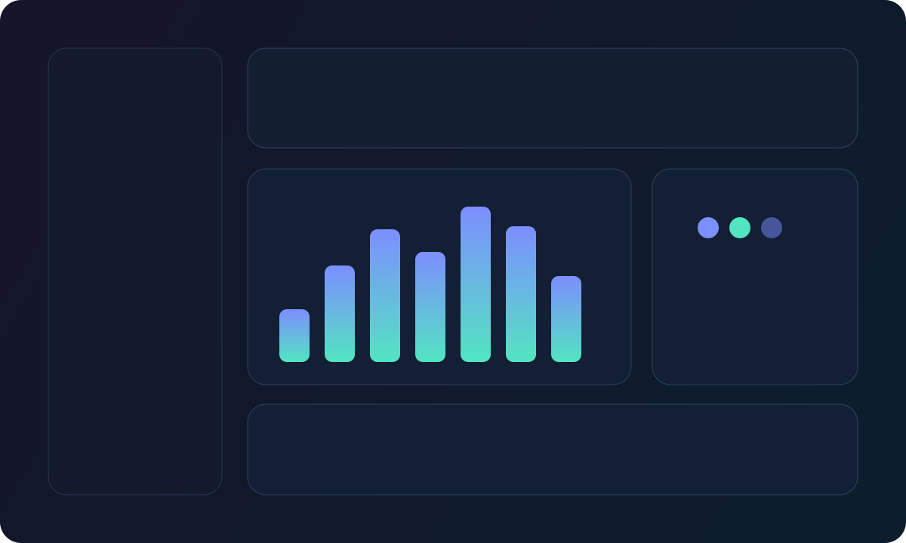
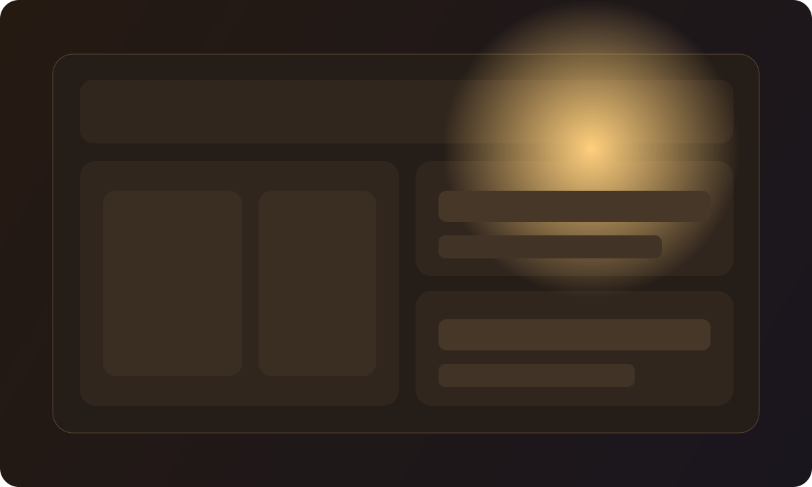

Илья • Сайты • Боты • Автоматизация
0
проектных направлений в активной разработке
0
разных форматов: боты, сайты, панели, сервисы
0
часа в среднем занимает запуск первой рабочей версии
Разрабатываю сайты и ботов для реальных задач бизнеса.
Берусь за лендинги, клиентские кабинеты, Telegram-ботов и дашборды. Делаю аккуратно, с понятной структурой и логикой.
Формат работы
Понятная подача без перегруза
Интерфейсы без лишнего шума: чтобы человек сразу понимал, что где находится и какой следующий шаг.
Подход
Практично и по делу
Фокус на результате, удобстве и понятном пользовательском пути.
Результат
Понимание с первого экрана
Страницу удобно открыть, показать и использовать в реальной работе.
Обо мне
Разработчик, который доводит проект от идеи до запуска
Илья, разработчик интерфейсов и автоматизации
Делаю лендинги, сервисы, Telegram-ботов и внутренние панели. В работе важны смысл, структура и удобство для пользователя.
Работаю короткими итерациями: быстро показываю рабочую версию, собираю обратную связь и довожу до уверенного результата.
Мой стек
- HTML, CSS, JavaScript, адаптивная вёрстка
- UI/UX, дизайн-системы, лендинги под конверсию
- Боты, автоматизация, интеграции и MVP-интерфейсы
Формат работы
- Быстрый старт с короткого брифа
- Понятные этапы и промежуточные релизы
- Результат, который не стыдно показать клиенту
Интерактив
Telegram-бот прямо на сайте
Команды для быстрой проверки
Нажимай команды или вводи их вручную. Встроены режимы продаж и поддержки.
Также работает свободный ввод, например: «нужен бот для лидов» или «хочу сайт под запуск».
NeuroFlow Bot
online
Проекты
Проекты из разных направлений: боты, сервисы и продуктовые сайты





Подход и процесс
Рабочий процесс без лишней бюрократии
Сначала определяем задачу, потом собираем структуру и визуал, после чего запускаем рабочую версию и улучшаем по факту использования.
Визуальная подача с характером
Чёткая иерархия и аккуратный визуал помогают быстро донести суть, а не перегружать человека лишними деталями.
Продуктовая логика внутри
В каждом проекте продуман путь пользователя: состояния, точки решения и понятные действия на каждом шаге.
Быстрый релиз без компромиссов
Сначала выпускаем основу, затем добавляем нужные модули, интеграции и улучшения.
Этапы запуска
От идеи до запуска: понятный и прозрачный путь
Фиксируем цель и сценарий
Разбираем задачу, аудиторию и ожидаемый результат.
Собираем архитектуру и визуал
Проектируем структуру, контентные блоки и ключевые экраны.
Релизим и масштабируем
Запускаем проект, собираем обратную связь и развиваем дальше.
Если нужна помощь с проектом — давай обсудим задачу
Работаю прозрачно: короткий бриф, понятные этапы, регулярные обновления и результат, который можно сразу использовать.